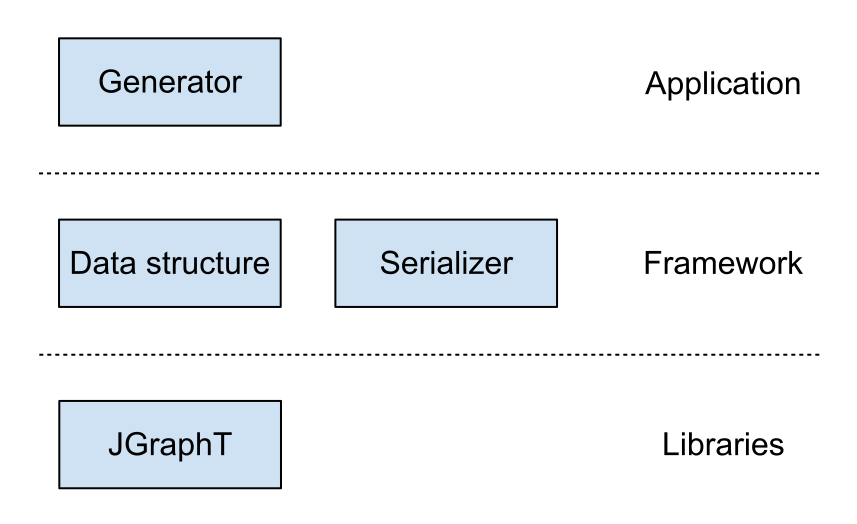
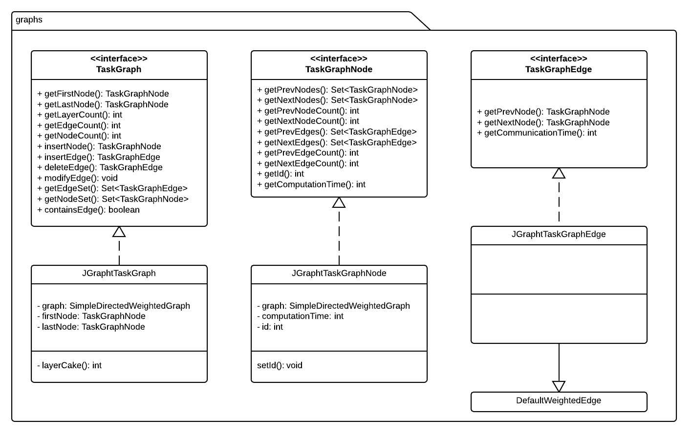
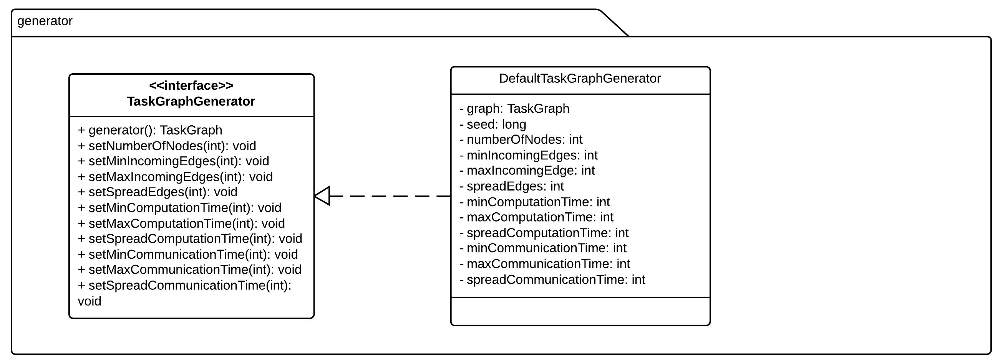
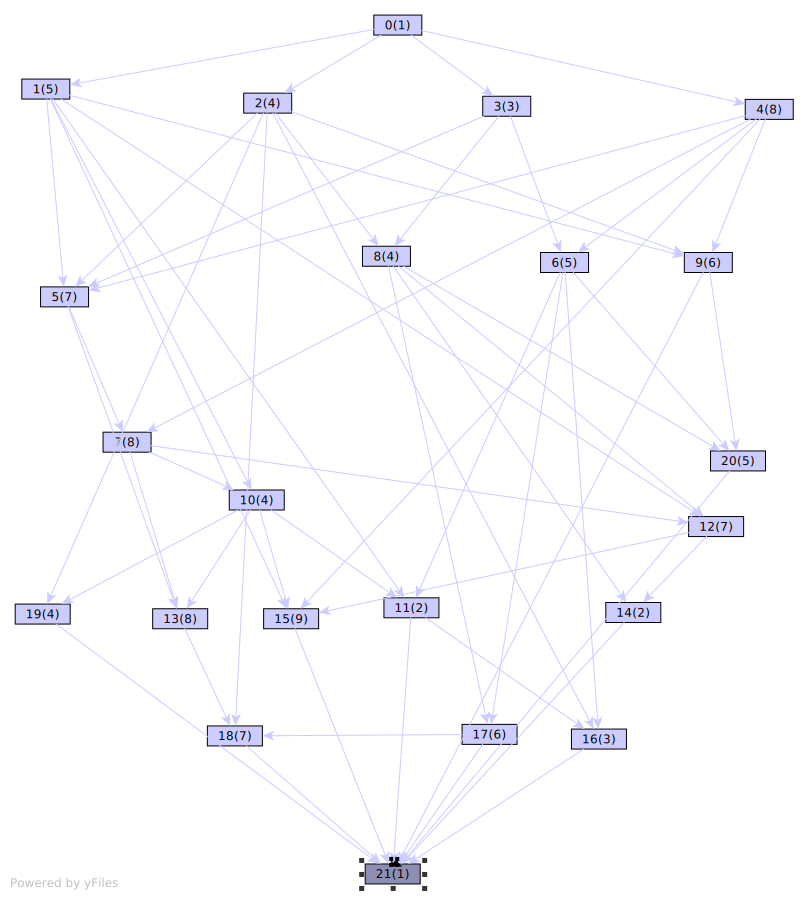

Sprint 1
27/08 - 2/09
Agenda
- Team
- Architecture
- Graph samples
Team
Team background
- Students at University of Applied Sciences, Augsburg
- Computer sciences, 4th semester
Team members
- Simon Kerler
- Benjamin Wöhrl
- Richard Stromer
- Manuel Oswald
- Ziad Nörpel
Architecture

Data structure

Generator

Serializer

Features
Data structure
- Simple directed weighted graph
- contains a valid task graph
- based on JGraphT
Generator
- Generates a random task graph
- Features multiple parameters
Serializer
- Serializer and deserializer
- Called by TaskGraphFileUtils
- Currently supported: STG
- Easy integration of new formats
- Future feature: use of generics
Graph samples
